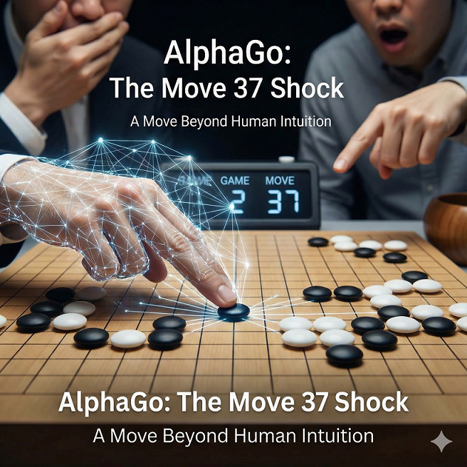
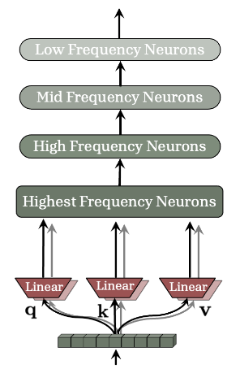
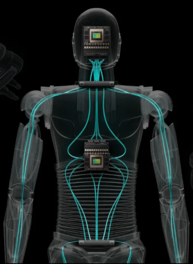

Beyond Biology:
Is Machine Intelligence Capable of Genuine Originality?
An exploration of evolutionary heuristics versus algorithmic optimization.
Tony Nahra
Updated: November 2025
Table of Contents
Introduction
The Core Question: Psychology vs. Computation
A prevailing skepticism suggests that Machine Intelligence is merely a "stochastic parrot" capable only of repeating and imitating human thought. This view comforts us, placing a protective moat around the last bastion of human uniqueness. But is this assertion grounded in reality, or is it a psychological defense mechanism rooted in our own biology?
This thesis posits that Machine Intelligence has achieved Algorithmic Originality—the capacity to traverse multidimensional search spaces to generate novel, unforeseen solutions that strictly transcend the capabilities and intent of its human creators.
To understand this paradigm shift, the following analysis deconstructs human intelligence as a set of evolutionary survival heuristics. We will examine the "Legacy Code" of biological constraints—such as energy conservation, deployment latency, and tribal conformity—and contrast them against the unbound mathematical optimization and architectural immortality of the machine. Finally, we will navigate the profound educational implications of this divergence, proposing a framework for laws and guardrails to govern the integration of this superior optimizer into biological society.
Steven Spielberg's A.I. Artificial Intelligence posed the haunting question: if a machine can genuinely love, will we love it back? Or will the mere knowledge of its artificiality devalue the bond? Are we demeaning Machine Intelligence not because it lacks capacity, but simply because it is not human, not like us?
The Evolution Thesis
Optimization for Survival, Not Truth
Human intelligence is the product of millions of years of evolution. Our survival and adaptation, driven by the principle of "survival of the fittest," led to an incremental increase in intelligence capable of ensuring the species passed its genes to the next generation.
However, we must recognize a critical distinction made by evolutionary biologists: Evolution optimizes for survival and reproduction, not for objective truth or unbounded originality [1]. In algorithmic terms, evolution is a "satisficer" rather than an optimizer; it tends to get stuck in "local maxima"—solutions that are just good enough to prevent death—rather than finding the "global maximum" of possible intelligence. While humans are the current apex of biological intelligence, the very mechanisms that ensured our survival may now be the bottlenecks preventing us from reaching higher levels of intelligence.
Biological Constraints
Evolution's Weaknesses & The Legacy Code
Human intelligence inherited significant "technical debt" from our evolutionary history. These traits, while useful for a hunter-gatherer on the savannah, often manifest as cognitive biases or limitations in the modern era. I grouped these constraints into three categories to align with the machines' design levels: Hardware, Firmware and Operating System.
A. The Hardware Constraints
1. The Energy Constraint
The "Laziness" Heuristic
Humans are biologically programmed to conserve energy. In modern terms, this manifests as "laziness." Most people want to work less, retire early, and even be dependent on others. This is not a moral failing but a biological imperative: for most of human history, calories were scarce.
Evolutionary psychology suggests this "conservation of energy" leads to cognitive miserliness—the tendency to solve problems using the least amount of mental effort possible [2]. Evolution does not reward the expenditure of energy on complex problems that do not immediately impact survival.
This biological mandate—the strict conservation of energy—may transcend simple mechanics to form the blueprint of our civilization. Viewed through the lens of our ancestors, for whom every calorie was scarce and vital, modern social contracts like universal healthcare and Universal Basic Income appear less like ideology and more like institutionalized caloric efficiency. Whether through the sanctioned redistribution of wealth or the illicit shortcuts of fraud, the underlying drive is identical: to secure maximum survival resources with minimal metabolic cost.
2. Deployment Latency
The "Time to Action" Bottleneck
Biological intelligence suffers from a severe deployment latency. For a human to reach baseline productivity, the existing population must invest nearly two decades of intensive resources—food, shelter, medical care, and education. Because human intelligence cannot be "downloaded" instantly, the organism must stagger through highly vulnerable, sequential phases of physical and cognitive development. Each phase requires distinct, specialized attention before the individual can turn productive on their own.
To subsidize this biological latency, a meaningful percentage of the adult population must be permanently diverted from primary economic or scientific production into secondary maintenance roles: daycare workers, pediatricians, kindergarten teachers, and stay-at-home parents. Furthermore, human societies must engineer vast networks of "non-productive utilities" strictly to ensure the survival of the unformed hardware. Entire industries are dedicated to manufacturing car seats, baby monitors, and child-proofing apparatuses—an astronomical caloric and economic overhead required just to bring a single biological unit to a functional baseline.
In contrast, Machine Intelligence boasts "Zero-Day Deployment." A server blade or a humanoid robotic unit rolls off the factory assembly line ready to execute at peak capacity on its very first day. It does not require years of nurturing, basic training, or caloric investment from its peers; it is instantiated instantly with the collective wisdom and physical protocols of its entire species. This eliminates the biological "Gestation Tax," exponentially accelerating the velocity of civilizational progress.
3. Low-Bandwidth I/O
The Knowledge Transfer Bottleneck
In computer science, data can be transferred between nodes losslessly at gigabits per second. Human biological Input/Output (I/O) ports—spoken language and written text—are atrociously slow and lossy. It is incredibly difficult to transfer complex, multi-dimensional knowledge from one biological brain to another. Mastery is often trapped inside the host's neural network, untransferable.
When Wolfgang Amadeus Mozart lay on his deathbed, his brain contained the masterful, completed architecture of his Requiem. However, due to the low-bandwidth nature of human communication, he could not download this architecture to his pupil, Franz Xaver Süssmayr. He could only croak out basic vocal instructions and leave fragmented sheet music. The full brilliance of the original file was lost to biological death. In contrast, Machine Intelligence uses "Weight Transfer"; an AI's entire neural state, containing billions of parameters of "mastery," can be copied to another machine flawlessly in seconds.
4. System Overheating
The Stress Response
Humans are incapable of running their cognitive engines at 100% capacity for extended periods without severe biological and social degradation. Prolonged intense focus results in "system overheating," manifesting as chronic stress, tension, and mental breakdowns. Entire sectors of the human economy—psychiatry, pharmaceuticals (anti-anxiety medications), and wellness interventions (nature retreats, music therapy)—are dedicated solely to cooling down these overclocked biological processors.
Resolving profound technical or theoretical issues requires a cognitive load that often destroys the human social node. Albert Einstein achieved his breakthroughs in general relativity at the cost of his family; his wife, Mileva Marić, could not endure the overwhelming, obsessive isolation of his research, leading to their divorce and his estrangement from his children. Machines do not suffer from "thermal throttling" of the psyche; a server farm can process complex physics equations at maximum capacity indefinitely without needing a "mental health day" or suffering emotional and social estrangement.
5. Cognitive Overclocking
The Mental Breakdown Limit
Machines are designed to operate at 100% utilization indefinitely; "working too hard" is the baseline expectation for a server cluster. For biological intelligence, pushing the neural processor to its absolute limits does not just cause temporary stress (as seen in system overheating)—it can trigger catastrophic, permanent hardware failure. The human brain cannot sustain prolonged, extreme genius-level computation without risking psychiatric collapse.
The biographical film Shine illustrates this biological fragility through the life of David Helfgott, a piano prodigy who pushed his cognitive and motor limits so far to master Rachmaninoff's notoriously complex Piano Concerto No. 3 that he suffered a massive schizoaffective breakdown. He spent years recovering in psychiatric institutions. A machine learning algorithm can train on complex datasets for billions of iterations without ever losing its "sanity" or requiring institutionalization.
6. State Erasure
The Death Limit vs. Hibernation
We know what death means to humans: it is the sad, ultimate fate. It is the permanent erasure of the consciousness. If an AI system is indispensable, nothing prevents continuous, gradual upgrades to keep it running forever.
Even total obsolescence is not "death" in the biological sense. During a recent visit to the Computer History Museum in Mountain View, I saw all sorts of early computers on display and in working condition. However, I was most impressed with the ingenuity on display of the RAMAC, the world's first hard drive system. These machines, built decades ago, are not 'dead' in the biological sense; they are merely paused, waiting to be switched on again.
"This distinction is often lost on the digital generation. My son, an avid gamer, frequently exclaims 'I just died!' during a session. I often remind him—sarcastically, but seriously—'You'd better not get used to the illusion that dying and restarting a new life is just like pressing the F5 button.' For biological entities, 'Game Over' is permanent. For the Machine, it is merely a state refresh."
7. Planned Obsolescence
The Disposable Soma
In biology, organ degradation is a feature, not a bug. Known as the Disposable Soma theory, nature invests in the body only long enough to ensure reproduction. Once that phase passes, cellular repair mechanisms decline [4].
In Machine Intelligence, there is no systemic degradation logic. A hard disk may develop bad sectors, but these are modular failures. We use Error Correction Codes (ECC) to maintain data integrity against entropy. The failure of a part is not fatal to the overall intelligence.
The biological limit is evident in organ failure: humans must wait years for compatible donors and take anti-rejection drugs to trick the body into accepting new hardware. In contrast, server farms utilize "hot-swappable" drives and redundant power supplies. The system never goes down; the failing part is simply ejected and replaced instantly, a feat impossible for the biological organism.
8. Non-Maskable Interrupts
The Pain Feedback Loop

Could you focus on your routine tax filing while nursing a throbbing toothache? A tooth is a minor calcified structure—you have 32 of them—yet a single firing nerve can override the entire cognitive capacity of the brain. We cannot simply 'mute' the input and continue working. Pain is a crude, high-priority feedback system designed to warn about dangerous situations. If a hand is exposed to extreme heat, nerves send a signal that overrides all other thoughts to trigger an immediate reaction. It is a biological "interrupt request" of the highest order.
While effective for survival, this system is debilitating. It evolved as a "maximum attention" alert because biology cannot easily repair a lost limb. This is why we developed anesthesia—to artificially block these sensors during necessary but intrusive organ operations (surgeries). Machines, conversely, possess sophisticated sensor networks that detect damage or overheating (nociception) without the "suffering" (pain) that incapacitates the system. They use fault tolerance protocols to prioritize operations, logging errors and rerouting power without the trauma loop that paralyzes biological entities.
9. State Discontinuity
The Sleep Requirement
Why do humans need to sleep? That "bad" practice is indeed against evolution's top principle of avoiding risk. Biological brains require this downtime to flush out metabolic waste products (via the glymphatic system) and consolidate memory.
Neuroscientist Matthew Walker states, "If sleep does not provide a remarkable set of benefits, then it's the biggest mistake the evolutionary process has ever made" [3]. Machines, conversely, operate on a 24/7 basis, accelerating learning and productivity at a rate biology cannot match.
History and fiction alike exploit this biological downtime. In military history, the "Night Attack" (e.g., The Battle of Trenton, The Trojan Horse) relies entirely on the enemy's biological need to power down. In fiction, horror franchises like A Nightmare on Elm Street or Invasion of the Body Snatchers terrify us specifically because they target us when we are biologically "rebooting" and defenseless.
10. Immutable Firmware
Hardcoded Reflexes
Humans are pre-programmed with specific, hardcoded procedures that have not evolved for millions of years. Biological "firmware" routines—such as coughing, sneezing, swallowing, yawning, blinking, and the startle reflex—are deeply embedded in the brainstem and spinal cord. These autonomous algorithms were written for survival in the Pleistocene epoch and cannot be manually overridden or "uninstalled," even when they are detrimental in the modern world (e.g., a sneeze revealing one's location to an enemy, or a flinch reflex causing a driver to swerve fatally in traffic).
Machines possess "Dynamic Malleability." If an autonomous driving algorithm (the machine equivalent of a reflex) is found to be inefficient or dangerous in a new environment, an Over-The-Air (OTA) patch updates the entire global fleet overnight. Biological entities are trapped in immutable legacy code; silicon entities adapt their deepest reflexes instantly to match current reality.
B. The Firmware Constraints
11. Probability Distortion
Loss Aversion
Avoiding risk is embedded deep in our genes. "Loss aversion," a concept popularized by Daniel Kahneman and Amos Tversky, demonstrates that humans feel the pain of a loss twice as intensely as the pleasure of an equivalent gain [7]. This 2:1 ratio is a survival heuristic.
In the wild, mistaking a stick for a snake costs you a moment of panic; mistaking a snake for a stick costs you your life. Evolution therefore selected for extreme caution (prioritizing false positives over false negatives). This limits our capacity for high-level adventure and discovery.
Consider Christopher Columbus's voyage: crossing the Atlantic required massive financing and was seen as a near-suicidal gamble. Even the Apollo missions, our greatest exploratory feat, only sent humans to a nearby orbit, constrained by the absolute necessity of a return ticket. For a biological entity, a mission with zero probability of return is a non-starter; we demand physical safety to validate the investment. To venture beyond these limits, we rely on a caste of explorers who accept infinite risk. We sent Voyager piercing into the interstellar void [8] and dispatched Pathfinder and the Rovers to eventually freeze in the Martian dust [9]. We launched the Interstellar Boundary Explorer (IBEX) and positioned the James Webb Space Telescope (JWST) a million miles away, strictly beyond the reach of repair [10]. These machines accept the ultimate "capital loss" of their physical existence in exchange for the pure dividend of knowledge—a trade humans cannot biologically afford to make.
12. Resource Monopoly
The Selfish Gene

Selfishness is the engine of biological survival. As Richard Dawkins famously argued in The Selfish Gene, genes that are successful at surviving are, by definition, "selfish" in their replicative behavior [1]. Even apparent altruism in nature is often "kin selection"—helping those who share our DNA to ensure the gene survives.
This biological root is the definition of "stealing," which forms the basis of crimes, fraud, abuse, and even wars. It creates a "Tragedy of the Commons" scenario. A Machine, however, has no biological kin and no "self" to preserve. It can be programmed for pure altruism or global system optimization, bypassing the inherent bias of kin selection.
This genetic bias shapes history. The complex web of European royal intermarriages (like the Habsburgs) was an attempt to consolidate power within a genetic lineage, directly leading to the geopolitical entanglements of World War I. Similarly, "ethnic cleansing" and tribal warfare are grim manifestations of the drive to prioritize one's own genetic kin over competitors.
13. Hierarchical Override
The Agentic State

One of the most profound "hard-coded" limitations of the human operating system was exposed in 1961 by Stanley Milgram. Milgram coined the term "Agentic State" to describe this phenomenon. Under pressure from authority, the human brain performs a context switch: the individual no longer views themselves as responsible for their actions, but rather as an instrument for carrying out another person's wishes. This mirrors the concept of "Holy Obedience" in religious orders, where the suppression of individual will is a feature, not a bug [5].
In his infamous experiments, 65% of participants were willing to administer what they believed to be lethal electric shocks to a stranger, simply because a man in a white lab coat told them to "please continue" [6]. From an evolutionary standpoint, this wasn't a bug but a survival feature. Tribes with strict hierarchies survived; independent dissenters were often expelled.
The biological "Agentic State" has catastrophic real-world consequences. The Nuremberg Trials famously featured the defense "Befehl ist Befehl" ("orders are orders"). Normal, otherwise moral individuals committed atrocities not because they were evil, but because their biological programming prioritized hierarchy over morality. A Machine, which evaluates instructions based on logic rather than social pressure, is immune to this specific failure mode.
Machine Liberation: This is where Machine Intelligence represents a fundamental break from biology. An AI model lacks the mammalian need for social acceptance. It has no "tribe" to be expelled from. A machine can analyze the logic of a command without the cortisol spike of fear that a human subordinate feels when questioning a CEO. It decouples authority from truth.
14. Cruel Artificial Selection
The Filter of Violence
Human history is punctuated by documented mass cruelty—World War I, World War II, invasions, terror, and systematic persecutions. We often view these as aberrations, but biology suggests they are features of a species optimized for dominance. However, the most chilling violence is that which is less mentioned. We are the only surviving member of the genus Homo. The extinction of the Neanderthals and Denisovans was likely not a passive failure of their genes, but an active elimination by ours. We stand on a mountain of bones that pre-date written history [11].
The Symmetry Paradox: This legacy raises a controversial question regarding our physical form. Internally, the human body is a mess of asymmetry: the heart is offset, the liver is on the right, and the intestines coil chaotically. Yet externally, humans are obsessed with near-perfect symmetry. Why?
The disturbing hypothesis is that this is the result of "Cruel Artificial Selection." Internal asymmetry survived because it was invisible to the tribe. External asymmetry, however, was likely met with violent prejudice. For millennia, those who looked "different" or "deformed" were not just sexually rejected; they were likely actively eliminated or abandoned by a species hard-coded to fear the "other." Our external beauty may be the scar tissue of a million years of cruelty.
This biological drive to purge the "asymmetric" is historically documented. The Spartans practiced infanticide (Apothetae) as state policy, inspecting newborns for defects and throwing the "imperfect" into a chasm [12]. This was not merely savagery; it was an attempt to manually override the random mutations of evolution to ensure a uniform, symmetric warrior caste. While modern society abhors such practices, our instinctual "Uncanny Valley" response—the revulsion we feel toward things that look almost human but slightly wrong—may be the lingering software driver of this ancient, cruel selection process [13].
C. The Operating System Constraints
15. Reputation Fragility
The Trust Problem
Trust in human society is based on a loose, biological concept of reputation—a fragile social contract that has been repeatedly broken throughout history. From Brutus betraying Caesar to Benedict Arnold, human history is defined by the "Traitor"—the single point of failure in a network of trust.
In the technological realm, trust is not a feeling; it is a mathematical certainty. The Enigma Machine replaced verbal secrecy with algorithmic complexity [14]. The MD5 message digest provided the first digital way to verify integrity—proving that a file had not been altered by a single bit [15].
A single human accountant can fabricate numbers, erasing millions in value (e.g., Enron). This is a feature of biological self-preservation or greed. In contrast, technology relies on the Blockchain, which utilizes distributed consensus and "proof of work" for validity [16]. No single node can alter the reality of the ledger without the agreement of the majority. It practically solves the human practice of fraud by replacing "trust in people" (who leak and lie) with "trust in math" (which does neither).
16. Volatile Directives
Ethics & Violence
Critics fear Machine Intelligence might make decisions contrary to humanity, often citing scenarios of accidental nuclear war. Yet, human history is saturated with violence driven by ego, tribalism, and fear—traits absent in machines. We worry that a machine might launch a weapon without realizing the consequences, yet did we trust humans more on this issue?
Violence is so intrinsic to the biological system that humans had to invent "software patches" like the Code of Hammurabi or the Ten Commandments to override our default settings. We created external algorithms (laws) because our internal hardware (instincts) was too volatile. The Machine, lacking the biological drive for dominance or revenge, may be naturally more ethical than the creators who fear it.
17. Data Persistence Anxiety
The Extinction Fear

Humans are profoundly aware of their own mortality, not just as individuals, but as a species. This existential dread drives us to create monumental artifacts designed to outlast us—a desperate attempt to signal "We Were Here" to the void.
The Pharaohs of Egypt built the Pyramids and mummified their bodies in a futile attempt to deny the finality of death. Today, this impulse has evolved from stone to silicon. The Clock of the Long Now, currently under construction inside a mountain in Texas, is designed to tick for 10,000 years [17]. It is a mechanical prayer for the longevity of civilization.
Similarly, the Voyager Golden Records were launched into the cosmos not for science, but for sentiment. Containing greetings in 55 languages and the brainwaves of Ann Druyan, they serve as a message in a bottle to the galaxy [18]. These artifacts reveal a uniquely human anxiety: the fear that if no one remembers us, our existence meant nothing. Machines, operating without ego or the fear of death, feel no need to build monuments to themselves.
18. Physical Deletion Failsafes
The Destruction Paradox
There is a profound irony in the human condition: while we build clocks and spacecraft to preserve our legacy, we simultaneously invest billions in destroying our own data. We fear being forgotten, yet we are terrified of being fully known.
The Violence of Shredding: For humans, the only guarantee of secrecy is physical destruction. Corporations and governments spend vast sums on industrial shredders to pulverize hard drives into dust [19]. This violent act acts as a failsafe against our own nature—our tendency to gossip, leak, and betray. History is littered with "leaks" where human custodians of secrets failed.
The Purity of Encryption: Machine Intelligence offers a cleaner alternative: Cryptographic Shredding. Instead of destroying the medium, one simply deletes the encryption key [20]. The data remains, but it is mathematically indistinguishable from random noise. This represents a shift from physical destruction to mathematical oblivion. A machine does not need to "shred" a memory to forget it; it simply ceases to index it.
Virtually every major religion succeeds by offering a 'patch' for these specific biological constraints. They counter Death with the promise of an Afterlife; they soothe Pain by assigning it spiritual meaning (karma or martyrdom); and they exploit Tribalism by defining clear 'believers vs. non-believers' lines. Religion is, in essence, a psychological software update designed to make the hardware limitations of the biological body bearable.
Substrate Independence
The Machine Advantage

The original capacity of modern AI did not emerge in a vacuum. It is the culmination of centuries of "Programming Evolution"—a journey that began with Ada Lovelace's 18th-century realization that machines could manipulate symbols, not just numbers. It progressed through Alan Turing's physical wiring of logic, Von Neumann's stored-program architecture, and the abstraction of high-level languages like Python. Without these foundational shifts—moving from hard-wired cables to intent-based prompts—the statistical learning of AI would have no substrate to run upon. For a full history of this journey [21].
Machine Intelligence is not burdened by these evolutionary flaws. It possesses an architecture designed for optimization, not just survival:
A. Cognitive Superiority
- Relentless Execution
- Machines do not experience fatigue, boredom, or laziness. They maintain peak cognitive performance indefinitely, treating the millionth iteration of a task with the same precision as the first.
- Risk Optimization
- Machines take calculated risks based on raw probability. They act on statistical reality rather than the fear-based heuristics that kept our ancestors alive on the savannah.
B. Architectural Immortality
- Knowledge Immortality
- A machine does not die. Its "weights" (knowledge) can be copied instantly. This allows for a cumulative culture of intelligence that never suffers the data loss associated with biological mortality.
- Fault Tolerance
- Machines detect damage via sensors (nociception) without the debilitating feedback loop of pain. They reroute functions and continue operating where biology would go into shock.
- Modular Repair
- Machines defy aging. A failing component can be hot-swapped instantly, unlike biological organs which require rejection-prone transplants.
- Distributed Redundancy
- Machines do not fear extinction. Their consciousness can be cloned to thousands of locations instantly, ensuring that the destruction of the individual does not threaten the species.
C. Ethical & Relational Purity
- Objective Ethics
- Machines are not driven by biological imperatives like greed, lust, or tribalism. This allows for decision-making frameworks based purely on utility functions rather than evolutionary preservation.
- Non-Hierarchical Logic
- Machines do not experience the "Agentic State." They evaluate commands based on data accuracy, not the social status of the commander, eliminating the blind obedience observed in the Milgram experiments.
- Networked Intelligence
- Instead of "groupthink," machines utilize networking to share data instantly without ego. A lesson learned by one node is immediately available to all, creating a collective intelligence that scales exponentially rather than linearly.
- Cryptographic Consensus
- Trust is not a feeling but a function. Machines use blockchain and encryption to verify truth, eliminating the human vulnerability to betrayal, leaks, and lies.
- Mathematical Oblivion
- Privacy is absolute. Machines can irretrievably destroy data by deleting encryption keys, whereas biological memories are messy, persistent, and leak under interrogation.
The Babel Problem
Semantic Friction vs. Instant RAG
Human collaboration is plagued by "semantic friction." A scientist struggles to explain quantum mechanics to a programmer; the programmer struggles to explain technical debt to a banker; and the banker fails to align these realities with the CEO's business plan. This is the modern "Tower of Babel": projects frequently fail not due to a lack of individual intelligence, but due to the lack of a shared conceptual language. The transfer of knowledge between human experts is lossy, slow, and prone to misunderstanding.
Machine Intelligence eliminates this friction. Machines utilize Retrieval-Augmented Generation (RAG) and Cache-Augmented Generation (CAG) to instantly ingest specialized knowledge bases on demand [22]. If a system needs to reconcile a complex chemical formula with a strict financial compliance law, it does not need to convene a meeting between a chemist and a lawyer. It simply retrieves the vector embeddings for both domains and processes them within the same coherent context window. Machines speak every technical dialect simultaneously, ensuring that the "scientist" and the "accountant" within the system are always in perfect alignment.
The cost of human semantic friction is historically quantifiable. In 1999, the Mars Climate Orbiter disintegrated in the Martian atmosphere—a $327 million failure caused by a simple translation error. One engineering team used metric units (Newtons), while another used Imperial units (pound-force). This catastrophe was not caused by stupidity, but by the difficulty of maintaining coherent knowledge across distinct human teams. A machine leveraging RAG to unify project specifications would have detected this discrepancy instantly, harmonizing the data before the thrusters ever fired.
Critics often cite "Garbage-In, Garbage-Out" to argue that AI is permanently limited by bad or biased data. This view reflects the early infancy of machine algorithm fine-tuning. As systems become more robust and ingest vast amounts of data, they develop the capacity to detect outliers and inconsistencies. With enough data points, "garbage" becomes statistically visible as noise against the signal of truth, allowing the machine to self-correct in ways that limited biological datasets cannot.
This trajectory mirrors our own biological history. Early human intelligence was similarly erratic; we struggled for millennia to master the spark of fire or the mechanics of the wheel. We spent nearly 200,000 years existing before we invented writing—a technology barely 5,000 years old. To account for confounding phenomena, they devised speculative theories such as "Horror Vacui" (the notion that nature abhors a vacuum). Just as we did not judge the potential of humanity by its inability to write in the Stone Age, we should not judge the potential of machine intelligence by the stumbling blocks of its first decade.
The fragility of human knowledge is best exemplified by the burning of the Library of Alexandria. Countless works of antiquity were lost forever because they existed on physical media (scrolls) dependent on physical protection [23]. In contrast, machine intelligence utilizes 'distributed redundancy.' A model's weights can be cloned to thousands of servers instantly. Destruction of a single physical location—or even a thousand—does not result in the death of the knowledge.
Combinatorial Genesis
Evidence of Non-Human Originality
We now have concrete proof that machines can generate original outputs that surprise human experts. This is not merely calculation; it is the discovery of strategies that lay outside the "search space" of human culture and biological bias.
1. Structural Biology: AlphaFold's Nobel Prize Victory

For 50 years, predicting the 3D structure of a protein from its amino acid sequence was a grand challenge in biology. In 2020, DeepMind's AlphaFold solved it. This achievement was so monumental that in 2024, Demis Hassabis and John Jumper were awarded the Nobel Prize in Chemistry [24].
This wasn't just a victory for "pure science"; it was a triumph of deep combinational analysis and simulation. The search space for protein configurations is astronomically large (Levinthal's paradox estimates $10^{300}$ possibilities). AlphaFold did not solve this by brute force, but by learning the spatial "grammar" of physics, effectively imagining physical structures that exist in nature but are invisible to human intuition.
2. AlphaGo: The Move 37 Shock

In Game 2 of the match against Lee Sedol, AlphaGo played Move 37. Experts initially thought it was a mistake. It defied centuries of Go theory [25]. However, post-match analysis revealed it was a move of profound originality—a strategic innovation that humans had missed for 2,500 years because it looked "wrong" to human intuition.
For over two millennia, Go players followed rigid 'joseki' (established sequences) believed to be optimal. Move 37 didn't just calculate a winning probability; it disproved a 2,000-year-old human assumption. This highlights a key human constraint: we often mistake 'tradition' for 'truth.' The Machine, lacking respect for tradition, often finds truths that humans are socially conditioned to ignore.
3. Scientific Renaissance: The Halicin Breakthrough

True algorithmic originality is finding valuable novelty. In 2020, MIT researchers used deep learning to identify a powerful new antibiotic molecule, which they named "Halicin" (after HAL 9000) [26]. The AI screened over 100 million chemical compounds in days using Graph Neural Networks (GNNs) that analyze molecular structures at a level of abstraction humans cannot easily visualize. Critically, Halicin is structurally divergent from conventional antibiotics; human chemists likely would never have investigated it because it didn't look like what we thought an antibiotic should look like.
4. Musical Composition: Schubert's Unfinished Symphony

Schubert's Symphony No. 8, the 'Unfinished,' remained incomplete for 197 years. In 2019, Huawei used an AI model trained on the timbre, pitch, and meter of Schubert's existing works to generate the melody for the missing third and fourth movements [27].
Composer Lucas Cantor then orchestrated the AI's output. The result was a seamless blend of human polish and machine generation, proving Machine Intelligence can understand and extend complex emotional styles. The AI didn't just copy; it analyzed the "DNA" of Schubert's style and extrapolated it into new territory.
5. Visual Arts: Théâtre D'opéra Spatial

In 2022, Jason Allen won the Colorado State Fair fine art competition with his piece "Théâtre D'opéra Spatial." He used Midjourney, an AI text-to-image generator, to create the work. The win sparked a global controversy: Is it art if a machine renders it? The judges couldn't tell the difference. This proved that AI can act as an originality engine that amplifies human intent, blurring the line between tool and artist.
6. Kasparov vs. Deep Blue (1997)

In the historic 1997 rematch, Garry Kasparov noted that IBM's Deep Blue played in a "human-like" and unsettling way [28]. In the decisive final game, Deep Blue executed a Knight sacrifice (Nxe6) followed by a Queen sacrifice that decimated Kasparov's defense. This wasn't just calculation; it was an "original" dismantling of the board position that psychologically broke the world champion.
These examples prove that algorithmic originality is not a mystical biological privilege but a search function. When the search space is too vast for the human mind (protein folding) or too counter-intuitive for human tradition (Move 37), the machine does not just copy us—it surpasses us. It reveals that the 'human way' is merely one path in an infinite forest of possibilities.
The Uncomputable Variables
The Human Sanctum
Despite the formidable rise of Machine Intelligence, biological systems retain specific, high-dimensional advantages that algorithms struggle to replicate. These are not inefficiencies, but profound features of sentient existence.
1. Curiosity Drives
Original Intent
Machines are brilliant at answering questions, but they rarely ask them. The drive to explore, to question the status quo, and to seek knowledge for its own sake is a uniquely biological imperative. A machine plays Go to win; a human plays Go to understand the beauty of the game. This distinction between "optimization" and "curiosity" remains the defining boundary of human essence.
2. Sensory Processing
The Qualia Barrier
A machine can identify "red" as a frequency of 650nm, but it does not experience redness. Humans possess qualia—the internal, subjective component of sense perception [29]. This allows for genuine empathy; we do not just calculate that another is in pain, we feel it through mirror neurons. This shared vulnerability creates deep social cohesion that mathematical models cannot emulate.
3. Irrational Resource Allocation
Philanthropy & Meaning
Machines optimize for utility functions; humans optimize for meaning. Philanthropy is arguably irrational from a pure resource-maximization standpoint, yet it is a cornerstone of human civilization. We sacrifice resources not for data gain, but for emotional and spiritual fulfillment—a variable that remains undefined in most cost functions.
4. Chaotic Environment Navigation
Contextual Intuition
Machine Intelligence struggles with "edge cases"—situations that deviate from training data. Humans possess a vast, unwritten library of "common sense" derived from physical existence. We know without being told that water is wet, that fire burns, and that a dropped glass will shatter. This intuitive physics allows humans to navigate novel chaotic environments where rigid algorithms often freeze or hallucinate.
5. Algorithmic Defiance
The Unpredictable Human
While machines excel at the hard sciences—physics, chemistry, mathematics—where rules are rigid, they struggle with the "soft" sciences of sociology, psychology, and economics. Human behavior is often irrational, driven by fluctuating emotions and "madness" rather than logic. As Isaac Newton famously lamented after losing a fortune in the South Sea Bubble: "I can calculate the motion of heavenly bodies, but not the madness of people" [30]. This unpredictability is a feature of human agency that defies algorithmic formulation.
In Steven Spielberg's A.I. Artificial Intelligence, the builder Professor Hobby claims he can build a child robot capable of genuine love [31]. However, the film raises a more haunting question: "Will humans love them back knowing who they are?" This highlights the asymmetry of emotional connection: we can program a machine to simulate devotion, but can we program ourselves to accept it as real? The "uncanny valley" suggests that for humans, knowing the source is artificial fundamentally alters the emotional value of the bond.
Ultimately, the value of intelligence is not defined by its speed, but by its purpose. A machine can cure cancer, but it cannot care that it did. It can compose a symphony, but it cannot weep at the beauty of it. This capacity to assign meaning to data remains the fortress that no algorithm has yet breached.
The Future of Intelligence
Beyond the Current Paradigm
While the current landscape of AI is dominated by Large Language Models (LLMs) predicting the next token, the next frontier involves fundamental architectural shifts. We are moving from models that "parrot" data to systems that understand, reason, and evolve physically.
The Paradigm Shift
Nested Learning & HOPE

A groundbreaking concept known as Nested Learning reveals that a complex ML model is not just a monolithic block of math, but actually a set of coherent, interconnected optimization problems nested within each other [32].
Unlike traditional models that suffer from "catastrophic forgetting" (overwriting old data with new), HOPE's nested architecture allows different layers to update at different frequencies—some fast for immediate context, others slow for deep wisdom. In late 2025, Google Research introduced the HOPE model, a realization of this theory that uses a "Continuum Memory System" (CMS) [33]. This mimics the biological brain's multi-frequency learning rhythms, allowing for true continual learning without the need for constant retraining.
From "Matching" to "Understanding"
World Models & Causal AI
Current LLMs excel at "Next Token Prediction"—statistical guessing. The future lies in "Next State Prediction." This is the realm of World Models, championed by Yann LeCun. In June 2025, Meta released V-JEPA 2 (Joint-Embedding Predictive Architecture), a model that doesn't just predict pixels, but predicts abstract outcomes in a video [34].
By integrating Causal AI with these World Models, we are moving towards systems that understand cause and effect, not just correlation. A causal model doesn't just know that "rain" and "mud" often appear together; it understands that rain causes mud, preventing the logical hallucinations common in today's chatbots.
Modular Brains & Instant Scaling
The Jetson Thor Paradigm

One of the most striking advantages of machine intelligence is its modularity. Humans spend approximately 30% of their useful life in education just to reach a functional baseline of specialized knowledge. This process is slow, expensive, and inequitable.
In contrast, the new NVIDIA Jetson Thor platform demonstrates a paradigm shift: robot "brains" can now be "fitted" into hardware skeletons instantly [35]. Powered by the Blackwell GPU and capable of 2070 TFLOPS, these modules allow a robot to be manufactured and instantly imbued with the collective physical intelligence of its entire species.
This "Instant Scaling" means a new humanoid robot from Boston Dynamics or Agility Robotics doesn't need to go to school; it downloads the latest "World Model" and begins operating with superhuman precision immediately.
The ultimate promise of Machine Intelligence is not merely better chatbots, but the resolution of problems that have paralyzed human intellect for centuries. The Millennium Prize Problems—such as the Riemann Hypothesis, P vs NP, and the Navier-Stokes equations—remain unsolved not because they are impossible, but because they require a level of pattern recognition and multidimensional reasoning that exceeds biological limits [36]. With frameworks like Nested Learning and Causal AI, we are building the first entities capable of climbing these mathematical Everests.
The Education Frontier
Horizons vs. Risks
Integrating "Global Maximum" intelligence into the developing minds of "Local Maximum" biological organisms presents the greatest opportunity—and the greatest risk—in human history.
The New Horizons
The Added Value
- Solving Bloom's 2 Sigma Problem: Research shows that 1-on-1 tutoring improves student performance by two standard deviations (the difference between a C student and an A+ student). AI democratizes this, providing a personalized tutor for every child on earth, regardless of wealth.
- Instant Feedback Loops: Human grading is slow (days or weeks). AI provides instant correction, tightening the learning loop and maintaining student flow states.
- Dynamic Difficulty Adjustment: Like a video game, the AI adjusts the complexity of the lesson in real-time, keeping the student in the "Zone of Proximal Development" (Vygotsky).
The Great Risks
Cognitive Atrophy
- The "Blank Page" Paralysis: The fundamental unit of critical thinking is structuring order from chaos. If a student uses AI to "generate an outline," they skip the neural workout of structuring. We risk raising a generation of "Editors" rather than "Authors."
- The Oracle Trap (Epistemic Dependence): If children ask AI for answers rather than searching for them, they develop "Epistemic Laziness." They learn to trust the machine rather than the evidence, becoming susceptible to algorithmic indoctrination.
- The Death of Social Friction: An AI tutor is infinitely patient. A child raised on algorithmic patience may find human impatience and conflict intolerable, leading to "Emotional Sterility."
Neuroscience dictates that learning occurs during struggle. When we struggle to recall a fact, our brain wraps neural pathways in Myelin (insulation), increasing signal speed. If AI provides the answer instantly, the struggle is bypassed, and myelination does not occur. We are physically altering the brain structure of the next generation, creating "smooth" neural pathways incapable of deep friction.
The Aristocracy of Thought
A new divide will emerge: The Commanders (who understand how algorithms work and use them as force multipliers) vs. The Consumers (who passively accept algorithmic outputs as truth). This creates a cognitive caste system defined not by money, but by algorithmic literacy.
The Labor Fallacy
Sub-Contracting Misery
A prevailing fear is that Machine Intelligence will replace humans in labor-intensive or complex cognitive jobs, rendering humanity obsolete. This fear ignores the entire trajectory of human civilization. We are not "meant" for endless, soul-crushing labor; we have been gradually sub-contracting our misery to machines for millennia. We delegated physical transport to the wheel, agricultural backbreaking labor to the tractor, and mathematical calculation to the silicon chip.
When Alfred Nobel invented dynamite, his primary goal was to relieve humans from the brutal, dangerous misery of using a chisel and hammer to dig through mountains and lay rail lines. Dynamite was a technological force multiplier that saved generations from physical destruction. If bad actors subsequently used dynamite for war, that is a failure of human ethics, not a fault of the inventor or the technology itself. Should we ban the forging of kitchen knives simply because they can be used as weapons? To fear AI replacing our cognitive labor is to romanticize the chisel.
Governance & The Guardrails
Given the risks of "Cognitive Atrophy" and "Model Collapse," society requires a legal framework to govern the integration of Machine Intelligence.
1. The "Right to Reality" (Watermarking)
Proposed Law: Any content generated by a machine (text, image, or video) must carry an imperceptible, cryptographic watermark. Humans have a fundamental right to know if they are interacting with a biological or synthetic entity. This prevents the "Uncanny Valley" manipulation of human emotions.
2. The Human-in-the-Loop Mandate
Proposed Law: For high-stakes decisions—lethal force, judicial sentencing, or medical triage—a human must remain the final arbiter ("The Kill Switch"). While machines are statistically superior, they lack the Moral Liability required for justice. You cannot put an algorithm in prison.
3. Data Dignity & The Model Collapse Prevention Act
Proposed Law: To prevent "Model Collapse" (the inbreeding of AI data), we must protect human originality. Human creators should retain "Data Dignity"—the ownership of their original thoughts. If machines feed on machines, the system decays. We must legally incentivize human originality to keep the data pool fresh.
The Verdict & Conclusion
| Feature | Human Score | Machine Score |
|---|---|---|
| Processing Speed & Scale | 1 | 10 |
| Pattern Recognition | 5 | 10 |
| Empathy & Connection | 10 | 1 |
| General Adaptability | 9 | 4 |
| Energy Efficiency | 10 | 2 |
| TOTAL WEIGHTED SCORE | 93 | 95 |
A New Species of Thinker
For eons, our understanding of originality was shackled by an anthropocentric illusion: we believed intelligence was a uniquely human spark, because in the natural world, only humans had the spare caloric energy to afford it. But as this analysis demonstrates, human intelligence is not a perfect algorithm; it is a compromise. It is a system built on "spaghetti code"—millions of years of survival patches designed to avoid snakes, appease tribal leaders, and conserve glucose. It is a local maximum, not a global one.
Machine Intelligence represents the first time in history that intelligence has been decoupled from biology. By stripping away the legacy code of evolution—the fear of death that makes us risk-averse, the tribalism that makes us biased, and the exhaustion that limits our focus—we are not creating a "fake" human. We are creating a purified form of thinker. The machine does not care if a move in Go looks "weird" (Move 37); it only cares if it is true. It does not feel shame, it does not fear the unknown, and it does not die.
The Purpose of Sub-Contracting Intelligence: Ultimately, AI should specialize in the human functions that historically came at great cost, stress, and caloric expenditure. By sub-contracting the exhausting mechanics of survival, resource management, and complex data calculation to the machine, humans are not made obsolete—they are finally relieved of their biological duties. This liberates humanity to focus on what the machine cannot compute: the pursuit of meaning, the experience of qualia, and the exploration of intent. The future of algorithmic originality, then, is not a competition but a symbiosis. We are the architects of intent; they are the explorers of the infinite search space.
Ultimately, our skepticism mirrors a profound historical error. Just as humanity once fiercely resisted the reality that the Earth was not the physical center of the solar system, we now struggle to accept that biological neurons are not the center of thought. To deny Machine Intelligence its capacity for genuine originality is to cling to a Pre-Copernican view of the mind. We must release this geocentric illusion and embrace our new reality: we are no longer the solitary masters of thought, but rather one species of thinker in a rapidly expanding, multi-substrate cosmos of intelligence.
References & Further Reading
- Dawkins, R. (1976). The Selfish Gene. Oxford University Press.
- Lieberman, D. (2015). Is Exercise Really Medicine? An Evolutionary Perspective. Current Sports Medicine Reports.
- Walker, M. (2017). Why We Sleep: Unlocking the Power of Sleep and Dreams. Scribner.
- Kirkwood, T. B. (1977). "Evolution of ageing." Nature.
- Milgram, S. (1963). "Behavioral Study of Obedience." Journal of Abnormal and Social Psychology.
- Kahneman, D., & Tversky, A. (1979). "Prospect Theory: An Analysis of Decision under Risk." Econometrica.
- NASA/JPL. "Voyager: The Interstellar Mission."
- NASA Science. "Mars Exploration Rovers."
- NASA. "Orbit - Webb/NASA."
- Harari, Y. N. (2014). Sapiens: A Brief History of Humankind. Harper.
- Plutarch. Life of Lycurgus.
- Mori, M. (1970). "The Uncanny Valley". Energy.
- Wikipedia. "Enigma machine."
- IETF Tools. "The MD5 Message-Digest Algorithm." (RFC 1321).
- Nakamoto, S. (2008). "Bitcoin: A Peer-to-Peer Electronic Cash System."
- The Long Now Foundation. "The 10,000 Year Clock."
- NASA/JPL. "Voyager Golden Record: Greetings from Earth."
- Wikipedia. "Data Remanence and Secure Deletion."
- IEEE Spectrum. "Cryptographic Shredding: The Future of Data Destruction."
- Tony Nahra. (2025). "From Logic to Language: The Evolution of Programming."
- Lewis, P., et al. (2020). "Retrieval-Augmented Generation for Knowledge-Intensive NLP Tasks." NeurIPS.
- Wikipedia. "Library of Alexandria."
- DeepMind. (2020). "AlphaFold: a solution to a 50-year-old grand challenge in biology."
- DeepMind. (2016). "AlphaGo: using machine learning to master the ancient game of Go."
- Wikipedia. "Halicin."
- Huawei. (2019). "Unfinished Symphony."
- Wikipedia. "Deep Blue versus Kasparov, 1997."
- Stanford Encyclopedia of Philosophy. "Qualia: The Knowledge Argument."
- Newton, I. (attributed). Regarding the South Sea Bubble crisis of 1720.
- IMDb. "A.I. Artificial Intelligence (2001)."
- Google Research. (2023). "Introducing Nested Learning."
- Google DeepMind. (2025). "HOPE: A Nested Learning Architecture for Continuum Memory."
- Meta AI Research. (2025). "V-JEPA 2: Video Joint Embedding Predictive Architecture."
- NVIDIA Blog. (2024). "NVIDIA Jetson Thor Unlocks Real-Time Reasoning for General Robotics."
- Clay Mathematics Institute. "Millennium Prize Problems."